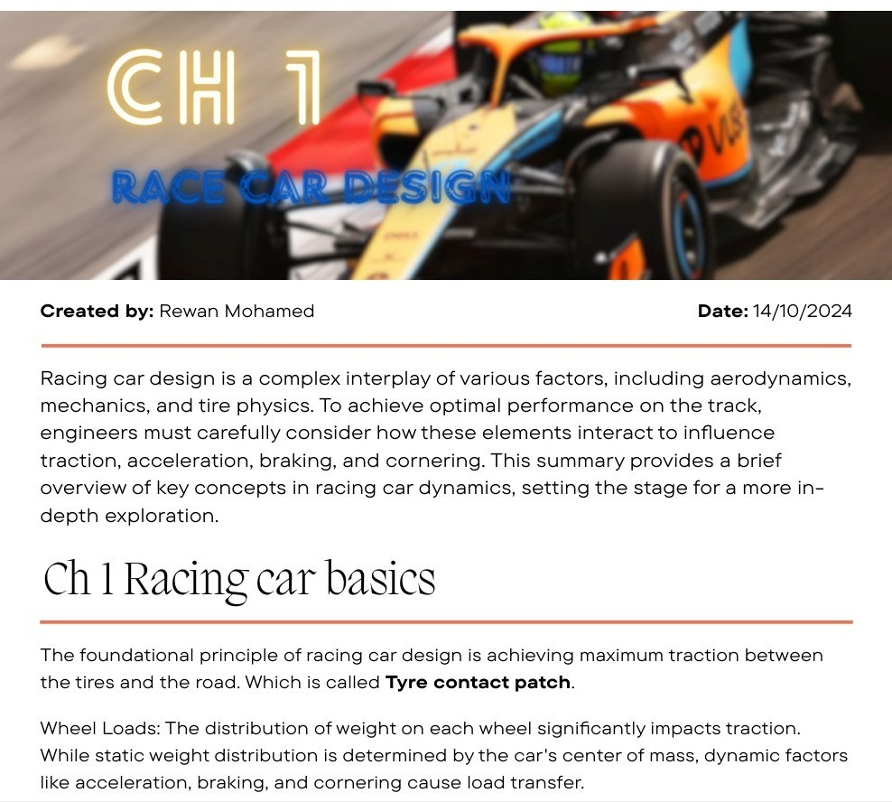
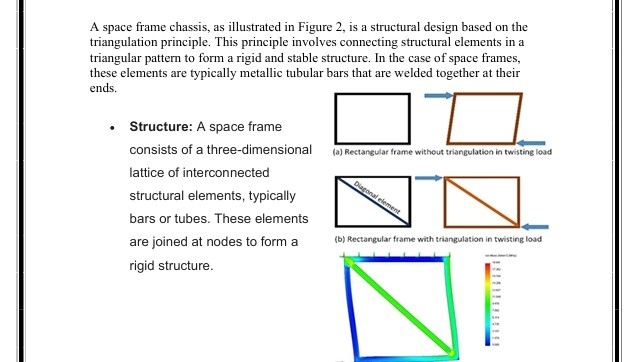
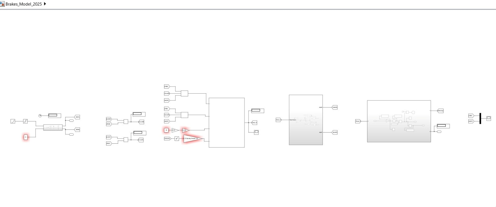
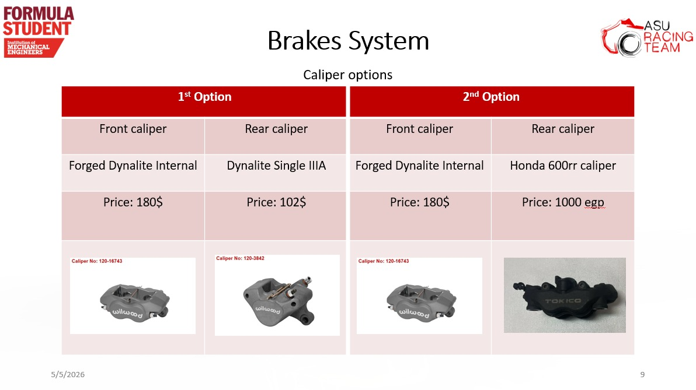

Space Frame Stress Analysis
Dynamic Brakes Model
Traction & Load Transfer

Racing car design is a complex interplay of various factors, including aerodynamics, mechanics, and tire physics. To achieve optimal performance on the track, it is essential to consider how these elements interact to influence traction, acceleration, braking, and cornering.
The foundational principle of racing car design is achieving maximum traction between the tires and the road, known as the Tyre contact patch. Additionally, the distribution of weight on each wheel (Wheel Loads) significantly impacts traction, influenced by dynamic factors like acceleration, braking, and cornering.
A space frame chassis is a structural design based on the triangulation principle. This principle involves connecting structural elements in a triangular pattern to form a rigid and stable structure.
Consisting of a three-dimensional lattice of interconnected metallic tubular bars, these elements are joined at nodes to form a rigid structure that can withstand twisting loads, as verified by our Finite Element Analysis (FEA).

Developed a comprehensive dynamic model (Brakes_Model_2025) using Simulink to simulate the braking system's behavior and optimize stopping power.
Conducted a trade-off analysis for caliper options, comparing Forged Dynalite Internal (Front) with options like Dynalite Single IIIA and Honda 600rr (Rear), balancing performance metrics against cost constraints.

